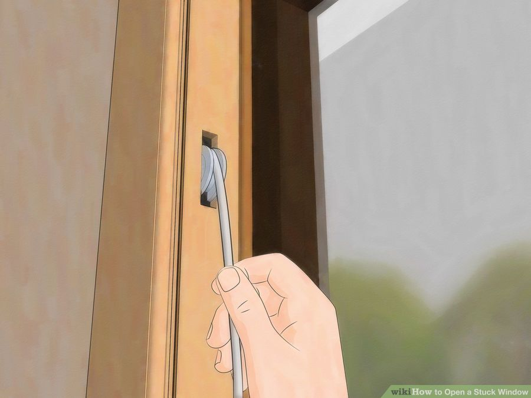

How to Open a Stuck Window
Prying a Window Open
-
Examine the window. Look at both sides of the window, interior and exterior.
- Make sure it is a window that is meant to be opened. Some new office and home windows are not meant to be opened. If there are no hinges or the window is a single pane with nowhere to slide, it likely does not open.
- Make sure that the window is not nailed or screwed shut for security or energy conservation reasons.
- Make sure any locks are disengaged.
- Look to see if the window frame has been recently painted.
- Decide which direction the window is supposed to open: up, outward or sideways.
-
Loosen any paint that is sealing the window shut. Removing dried paint that collected between the window and frame will free the window and allow it to be opened.
- Use a razor knife to cut along the edge of the window and the frame. Cut across all four sides of the window. You may need to check the exterior of the window in addition to the inside to make sure that it isn’t painted shut on both sides.
- Insert a putty knife between the window and the frame. Wriggle the knife back and forth to loosen any dried paint between the window and the frame. Go around the entire edge of the window to loosen all sides.
- Hammer the edge of the window to break the seal created by paint. Use a wood block to cushion the blows from the hammer and prevent making dents in the wood of the window. Be careful to hit gently so as not to break the window. Hammer the wood portion of the window and not the glass.
- Push on the window with your hands. Try to loosen the window one side at a time.
- Push each corner to see if there is any movement.
- Press on the window gently to open it a little at a time.
- Force the window up with a pry bar. Place a small block of wood on the window frame to give your pry bar more leverage. Gently force the window up with the pry bar.
- Reposition the pry bar along the bottom edge of the window to lift both sides of the window.
- Using a pry bar may damage the wood of the window or window frame, use this method very carefully as a last resort.
Lubricating a Stuck Window
- Rub the end of a candle along the channel where the window opens. Spread wax from the bottom of a candle into the window channel. The wax will help allow the window to slide up and down and prevent future sticking.
- Remove moisture from the window frame. Wood may swell due to humidity causing windows to become stuck. Drying out the wood may help the window open more easily.
- Run a hair dryer along the edges of the window frame for several minutes. After drying the wood, try opening the window.
- Place a dehumidifier in a room with stuck windows. Lowering the humidity in the room should help reduce the swelling of the window frames.
- Use a wood block and hammer to widen the window channel. If the window is in a wooden frame, place a wood block along the channel where the window opens and hammer it gently to depress the wood. Make the channel wider to allow the window to move more freely.
- Spray a lubricant such as WD-40 along the edge of the window. Be careful when using spray lubricants as they may discolor some surfaces or damage some types of paint.
- If the window opens outward on hinges, spray the hinges with the lubricant for smoother operation.
- Open the window repeatedly. After you get the window to open one time, open and close it several times to loosen the action of the window. If it still sticks, check the frame to ensure that it isn’t warped or damaged from water.
- Window frames with severe water damage may need to be replaced entirely.
Removing a Window Sash
- Remove the window stops. The stop is a small piece of trim in the window frame that holds the movable sash in place. Examine the stop to determine how it is attached to the window frame.
- Use a utility knife to remove any paint that is sealing the stop to the window frame.
- Remove any screws that are holding the sash in place.
- Gently pry the stop out using a flathead screwdriver or paint scraper.
- Be careful when removing the stops as they can snap easily. You may need to purchase a replacement stop to reinstall the window.
- Unscrew any hardware on the sash. Remove the locks or latches used to close the window. Check for any additional hardware from curtains or other additions that may be attached to the window sash or frame.

- Tilt the top of the bottom section of the window inward. Remove the bottom sash first by leaning it in to the inside of the house. As you lean it inward, pay attention to the ropes connecting the window to the pulley inside the frame.
- Remove the rope from one side of the window by pulling the knot down and out from the side of the window sash.
- Remove the other rope from the other side in the same manner.
- Smooth the edges of the sash.Once the sash is removed, sand the edges to remove any paint or swollen wood causing the window to stick. Make sure to sand evenly to avoid creating additional bumps or uneven surfaces which may cause additional sticking issues.
- Remove the upper sash. In double hung windows the upper sash can be removed as well. Remove any paint that is sealing the window shut to be able to move the sash.
- Use a razor knife to cut around the edges of the window.
- Slide the upper sash down to reveal the pulleys in the side of the window jamb.
- Pull the right side of the window in to free it from the jamb.
- Remove the rope connecting the sash to the pulley inside the window frame and jamb.
- Pull the left side of the window out and remove the rope.
- Sand the edges of the upper sash. Check the edges of the sash for any paint or warped wood. Sand the sash smooth to allow for better operation.
- Sand the track inside the window frame. Remove any dried paint that has built up along the window sash with a scraper and sand the track smooth.
- Replace the window sashes.Reverse the steps used to remove the window sashes to put them back in place.
- Attach the ropes to the upper sash and slip it in place one side at a time.
- Attach the ropes to the lower sash and place the bottom half in first. Push the upper half in place.
- Slide the window stop back in place and attach it with screws or finish nails.
HOME